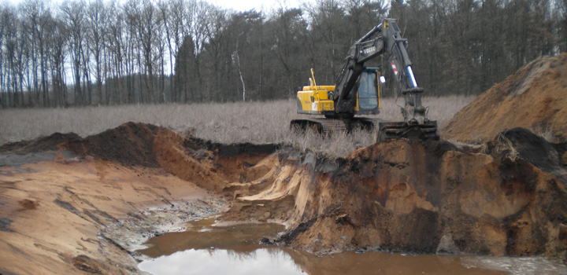

Dienstleistungen
Garten- und Landschaftsbau
")


")
Dienstleistungen
- Planungsarbeiten (Garten und Grundstück)
- Erstellung von Gartenanlagen (Beet- und Pflanzflächen)
- Begrünung (Pflanzenlieferung, Pflanzen-Einbau)
- Strauch- und Pflanzenschnitt nach Art und Struktur
- Heckenschnitt
- Fräs- und Mulcharbeiten
- Erstellung von Rasenanlagen (Saatverfahren, optional Rollrasen)
- Erstellung von Teichanlagen (Folie, Lehmziegel o.ä.)
- Anlagenpflege (mähen, entkrauten, schneiden)
- Gartenpflege saisonal
- Dauerpflegearbeiten über die Vegetationsperiode
- Pflasterarbeiten (Gehwege, Terrasse, Einfahrten)
- Erdarbeiten (Drainierung, Kanalisation)
- Erstellung Naturseteinmauern / Friesenwälle
- Zaunbauarbeiten (Holz, Kunststoff, Metall, in Form und Farbe)
- Montagearbeiten aller Art (Lauben, Gartenhäuser, Gewächshäuser, Stege, u.ä.)
- Abfuhr und Entsorgung von Grünabfällen
Forstarbeiten


Dienstleistungen
- Holzerntemaßnahmen
- Kulturbegründung
- Jungbestandspflege, Läuterungen
- Holzrückearbeiten (Seilwinden, Forwarder)
- Zaunbauarbeiten (Wildschutzzäune, Wanderzäune, Weidezäune)
- Starkholzfällung, Wertholzaufbereitung
- Forstschutz (biotisch / abiotisch)
Baumarbeiten (Privat und Kommunal)
Dienstleistungen
- Baumfällungen auch in schwierigsten Fällen
- Kronenschnitt / Wipfelköpfung
- Einsatz von Hubsteigern jeglicher Art
- Einsatz von Schwerlastkränen (bis 120 Tonnen)
- Schreddereinsatz manuell / maschinell bis 35 cm
- einholen und durchführen verkehrsregelnder Maßnahmen (optional)
- Antragsabwicklung / Fällgenehmigung nach Baumschutzsatzung
- Baumchirurgie / Baumsanierung
- Baumbeurteilung / Baumgutachten
Maschineneinsatz
Dienstleistungen
- Bagger, Minibagger, Radlader, Verdichter, Walze
- Schredder (bis 35 cm)
- Seilweinde funkgesteuert (2x 5,5 Tonnen)
- Forwarder
- Motorsäge, Motorsense
Motorsägenseminare
Dienstleistungen
- Organisation und Durchführung von MS-Lehrgängen für private oder gewerbliche Nutzer durch autorisierte Fachkraft
- Erteilung und Ausstellung eines Befähigungsnachweises
Winterdienstarbeiten im privaten Bereich
Dienstleistungen
- Bürgersteige, Gehwege, Haus- und Hofeinfahrten nach den örtlichen / regionalen Vorgaben